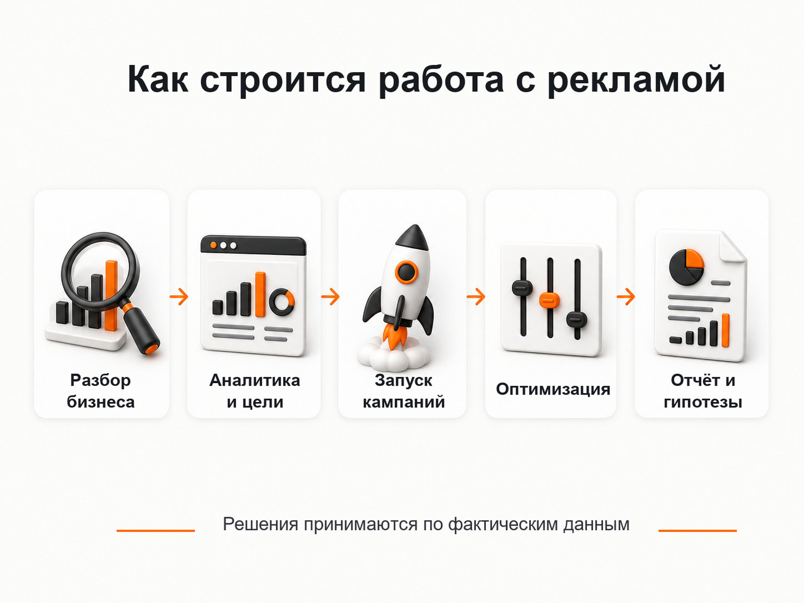

Блог о платном трафике
Частный специалист по Яндекс Директ
Если вам нужен частный специалист по Яндекс Директ, который сам разбирает проект, настраивает рекламу и отвечает за дальнейшую оптимизацию, я могу взять эту работу на себя.
Я занимаюсь платным трафиком более 10 лет и веду проекты напрямую, без передачи рекламы менеджерам, помощникам или стажерам.
Моя задача - не просто запустить кампании. Сначала я разбираюсь, что вы продаете, кому, с какой экономикой и куда ведете трафик. Затем настраиваю аналитику, запускаю рекламу и по фактическим данным постепенно улучшаю результат.

Что делает частный специалист по Яндекс Директ
В Яндекс Директе результат зависит не от одной настройки рекламного кабинета. На стоимость и качество заявок одновременно влияют спрос, предложение, сайт, структура кампаний, аналитика и то, на каких данных обучаются алгоритмы.
Поэтому в работу над проектом я обычно включаю несколько направлений.
Разбор бизнеса и текущей рекламы
Перед запуском смотрю продукт, целевую аудиторию, географию, конкурентов, оффер и посадочную страницу. Если реклама уже работает, анализирую существующие кампании и статистику, чтобы не начинать с нуля там, где уже накоплены полезные данные.
Настройка Яндекс Директ
Подбираю структуру кампаний под задачу проекта, настраиваю поиск, РСЯ и другие подходящие форматы. Работаю с ключевыми фразами, автотаргетингом, аудиториями, объявлениями, креативами, минус-фразами и стратегиями управления показами.
Яндекс Метрика и цели
До оценки рекламы нужно понимать, какие действия считать результатом. Настраиваю или проверяю цели в Яндекс Метрике, чтобы видеть заявки, звонки и другие значимые действия, а не ориентироваться только на клики и CTR.
Ведение и оптимизация
После запуска работа только начинается. Анализирую поисковые запросы, площадки, аудитории, расходы, конверсии и стоимость обращения. Отключаю слабые связки, перераспределяю бюджет, тестирую новые гипотезы и масштабирую то, что показывает нормальную экономику.
Рекомендации по сайту и воронке
Иногда проблема находится не в рекламном кабинете. Если люди переходят по целевым запросам, но не оставляют заявки, нужно смотреть посадочную страницу, оффер, форму, скорость сайта или сам путь пользователя. В таких случаях я отдельно показываю, что стоит изменить до увеличения рекламного бюджета.
Как строится работа со мной
Обычно процесс выглядит так:
- Вы рассказываете о задаче, продукте и текущей ситуации с рекламой.
- Я изучаю сайт, рекламный кабинет и аналитику, если они уже есть.
- Определяю, какие кампании и гипотезы имеет смысл запускать или перерабатывать.
- Настраиваю аналитику и рекламные кампании.
- После запуска собираю данные и оптимизирую рекламу по фактическим результатам.
- В отчетах показываю не только цифры, но и что было изменено, что сработало и что планируется проверить дальше.

Рекламный кабинет остается на стороне клиента. Вы видите расходы, статистику и изменения, а доступ к накопленным данным не зависит от продолжения сотрудничества.
Частный специалист или агентство
Главное отличие частного специалиста - вы общаетесь непосредственно с человеком, который работает в рекламном кабинете. Не нужно передавать задачу через аккаунт-менеджера и выяснять, кто именно принимает решения по кампании.
Это особенно удобно, когда проекту нужен один сильный специалист по платному трафику, а не отдельная команда из нескольких подрядчиков.
Агентство может быть логичнее для крупных проектов, где одновременно нужны дизайнеры, разработчики, SEO, CRM, контент и несколько рекламных каналов. Если основная задача - Яндекс Директ, аналитика и работа с посадочной страницей, частный формат обычно дает более короткую цепочку коммуникации.
Сколько стоят услуги частного специалиста по Яндекс Директ
Стоимость моей работы начинается от 30 000 ₽ в месяц. Рекламный бюджет оплачивается отдельно напрямую рекламной системе.
Итоговая стоимость зависит от объема рекламного бюджета, количества направлений, рекламных кампаний и сложности проекта. Перед началом работы я сначала смотрю задачу и оцениваю, какой объем действительно потребуется.
Кому подходит работа с частным специалистом
Такой формат подходит, если вам нужен человек, который лично отвечает за рекламный кабинет и может быстро принимать решения без длинной цепочки согласований.
Чаще всего это актуально, когда:
- нужно запустить Яндекс Директ с нуля;
- текущая реклама работает, но результат не устраивает;
- стоимость заявки растет и непонятно почему;
- обращения есть, но их качество низкое;
- нужно связать рекламу с Метрикой и реальными конверсиями;
- требуется постоянное ведение, а не разовая настройка;
- нужен прямой контакт со специалистом, который сам вносит изменения.
Как выбрать частного специалиста по Яндекс Директ
Я бы смотрел не на обещания «дешевых заявок», а на то, как специалист собирается работать.
Проверьте пять вещей.
Есть ли реальные кейсы. Они помогают понять, работал ли человек с задачами, похожими на вашу. При этом сравнивать только цену заявки между разными нишами бессмысленно - экономика у бизнеса разная.
Кто будет вести проект. Если вы выбираете конкретного специалиста, заранее уточните, он сам работает в кабинете или передает его другому человеку после продажи услуги.
Как устроена аналитика. Специалист должен понимать, какие конверсии передаются в Яндекс Метрику и по каким данным будет оцениваться реклама.
Где находится рекламный кабинет. Лучше, когда кампании создаются в вашем аккаунте или у вас сохраняется полный доступ к нему и накопленной статистике.
Есть ли понятные условия работы. Состав работ, стоимость, доступы, отчетность и порядок взаимодействия лучше определить до запуска.
Почему я веду проекты лично
Я работаю с Яндекс Директом и платным трафиком более 10 лет. На сайте собрано более 40 кейсов по разным нишам, где можно посмотреть реальные задачи и результаты.
Проекты веду сам. Клиент общается непосредственно со мной, и я же анализирую статистику, меняю настройки, проверяю гипотезы и готовлю рекомендации.
Работаю официально как ИП, по договору, с ЭДО и закрывающими документами.
Что нужно для начала работы
Для первичной оценки достаточно ссылки на сайт и краткого описания задачи. Если Яндекс Директ уже запускался, полезен доступ к рекламному кабинету и Яндекс Метрике - по ним можно понять, что происходило с трафиком раньше и есть ли данные, которые стоит сохранить.
После этого можно определить, нужен ли новый запуск, аудит существующих кампаний или полноценное ведение.
Частые вопросы
Вы работаете только с Яндекс Директом?
Основное направление - платный трафик. Помимо Яндекс Директа я работаю с Telegram Ads и Avito Ads. Канал выбираю под задачу, а не потому, что его обязательно нужно подключить.
Можно заказать только настройку рекламы?
Формат работы зависит от проекта. Но в большинстве случаев после запуска рекламу нужно наблюдать и оптимизировать по фактическим данным, поэтому разовая настройка без дальнейшего контроля подходит не каждой задаче.
Можно начать с аудита текущей рекламы?
Да. Если кампании уже работают, логичнее сначала проверить структуру, стратегии, запросы, площадки, цели и накопленную статистику. После этого становится понятно, что стоит сохранить, а что переработать.
Кто будет общаться со мной по проекту?
Я веду проекты лично. Отдельного аккаунт-менеджера между клиентом и специалистом нет.
Итог
Частный специалист по Яндекс Директ подходит бизнесу, которому нужен прямой контакт с исполнителем, прозрачный доступ к рекламному кабинету и постоянная работа с результатом после запуска. Я беру на себя настройку, аналитику и ведение рекламы, а решения принимаю на основе фактических данных проекта.